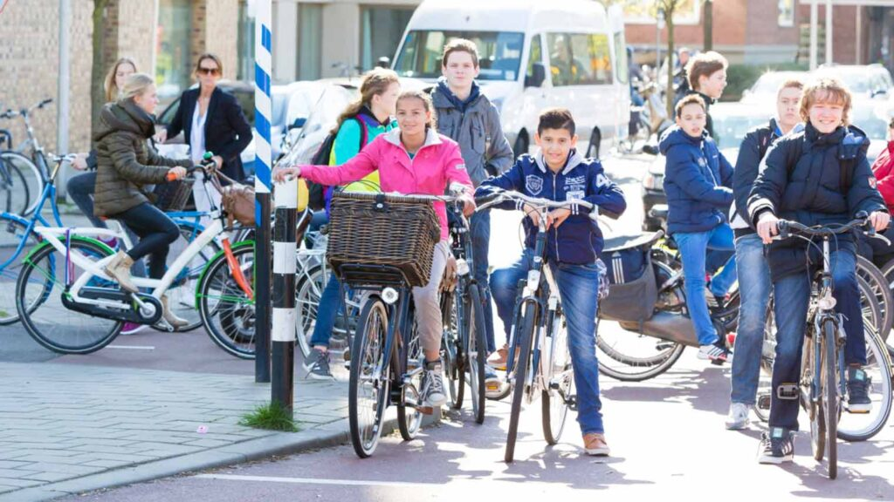
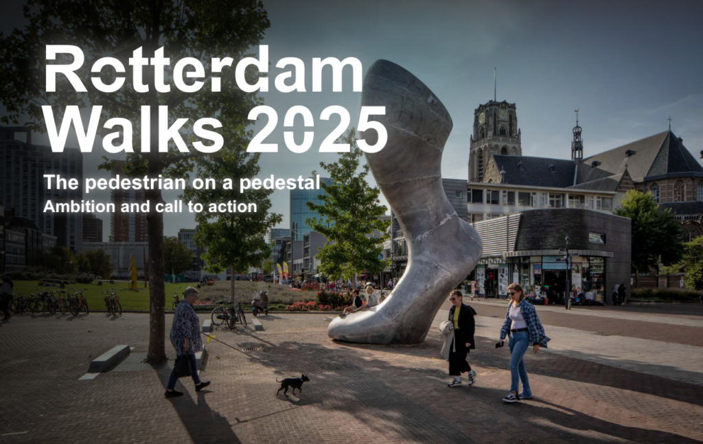
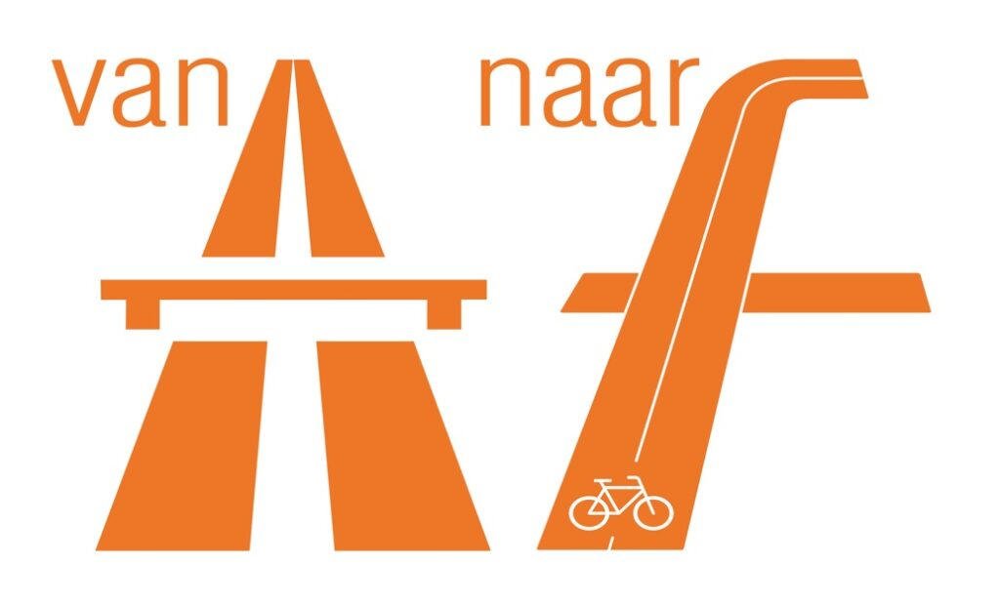
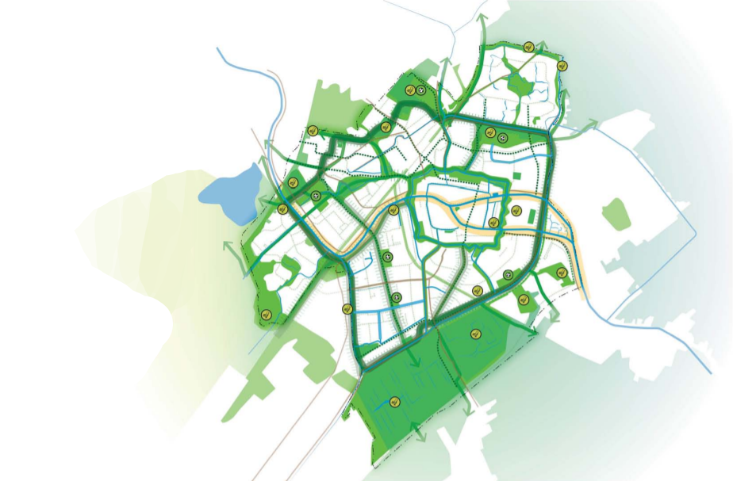

Onderdeel van: Acht kansen voor mobiliteit
Steeds meer overheden geven meer ruimte aan lopen en fietsen. Daarbij hanteren ze het STOP-principe, wat staat voor Stappen (lopen), Trappen (fietsen), OV (openbaar vervoer) en Personenauto, in díe volgorde. Denk aan aantrekkelijke loop- en fietsroutes en voldoende mogelijkheden om fietsen veilig te stallen. Op het platteland blijft de auto uiteraard belangrijk, omdat lopen, fietsen en OV in dunbevolkte gebieden lang niet altijd een reëel alternatief vormen.
Ruimte voor lopen
Alle gemeenten hebben fietsbeleid, steeds meer gemeenten ontwikkelen nu ook loopbeleid. Want lopen is van belang, naar school, winkel, OV-halte of voor je plezier: je moet kunnen genieten van de omgeving. Lopen is duurzaam, klimaatneutraal, gezond, goed voor de lokale economie en de regionale bereikbaarheid. Daarom moet volgens het STOP-principe de voetganger het uitgangspunt zijn.
Het is bekend hoe we gedragsverandering kunnen bereiken op dit gebied. Lopen spreekt vanzelf voor veel verplaatsingen in de 15-minutenstad, met een concentratie van voorzieningen. Elementen van de 15-minutenwijk passen Eindhoven, Groningen en Utrecht toe, zodat je voorzieningen binnen een kwartier lopen of fietsen kunt bereiken.
Vaker & verder fietsen
Heel Nederland fietst in 2040. Dat is waar de Fietsersbond van droomt in hun fietsvisie: “De fiets is voor de korte en middellange afstand de belangrijkste manier om je te verplaatsen”.
De fiets is een laagdrempelig en goedkoop vervoersmiddel. Het stelt mensen die niet over een auto beschikken in staat om deel te nemen aan de maatschappij. Door meer te fietsen, bewegen we bovendien in een gezondere omgeving, met betere luchtkwaliteit en minder geluid. Daarnaast draagt fietsen bij aan vermindering van de uitstoot van CO2 en stikstof.
Naast de vertrouwde (elektrische) fiets, ontstaat er een hele FietsFamilie van bakfietsen, transportfietsen, driewielers, speedpedelecs, velomobielen, scooters en aangepaste fietsen voor mensen die minder mobiel zijn. Meer fietsers en al deze verschillende voertuigen met verschillende snelheden leggen extra druk op onze fietspaden. Dat vraagt om meer ruimte voor de fietser! Ook met die extra ruimte voor de fietser is fietsen – net als lopen – een ruimte-efficiënte vorm van vervoer. Door op plekken waar ruimte schaars is voorrang te geven aan fietsen en lopen, blijft meer ruimte beschikbaar, bijvoorbeeld voor woningen en vergroenen.
Meer dan de helft van de autoverplaatsingen is korter dan 7,5 km. De opkomst van de elektrisch fiets en de aanleg van doorfietsroutes maakt dat steeds meer bestemmingen binnen ‘fietsbereik’ komen. Ruim 60% van werknemers woont binnen 15 km van hun werk. Werkgevers spelen hier vaker op in, met bijvoorbeeld een ‘fiets van de zaak’, een douchemogelijkheid op kantoor en een goede reiskostenvergoeding voor gebruik van de fiets.

Maak ruimte voor de fiets
Zorg voor meer en bredere fietspaden. Focus op éénrichting fietspaden om het veilig te houden.
Ontwerp voor mensen & fietsen
Rotterdam toont ambitie
Een goed voorbeeld van ambitie op het vlak van zowel lopen als fietsen is de gemeente Rotterdam.
- Rotterdam Loopt 2025; de voetganger op een voetstuk. Lees dit ambitiedocument
- Fietskoers 2025; de fiets als hefboom in de Rotterdamse mobiliteitstransitie. Lees dit ambitiedocument


Maak doorfietsroutes
Doorfietsroutes (vroeger: snelfietspaden of fietssnelwegen) zorgen voor aantrekkelijke, veilige en comfortabele fietsverbindingen die woon- en werkgebieden verbinden. Er wordt gewerkt aan een landelijk netwerk van doorfietspaden, onderdeel van het Nationaal Toekomstbeeld Fiets. Zuid-Holland is ook onderdeel van twee landelijke, meer recreatieve fietsnetwerken: fietsknooppunten en langeafstandsfietsroutes.
{kind=link}
Richt steden groener in
Vergroenen van de openbare ruimte maakt lopen en fietsen aantrekkelijker. Steden als Leiden (groene ring Singelpark) en Rotterdam (zeven stadsprojecten) geven het goede voorbeeld.
Afbeelding: Ontwerp Omgevingsvisie Leiden 2040

> Verder naar Uitdaging 3: Ruim baan voor openbaar vervoer